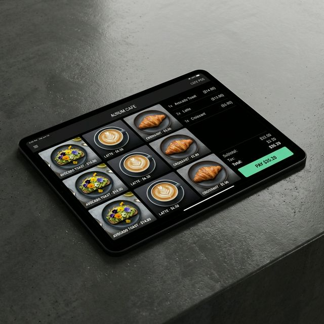
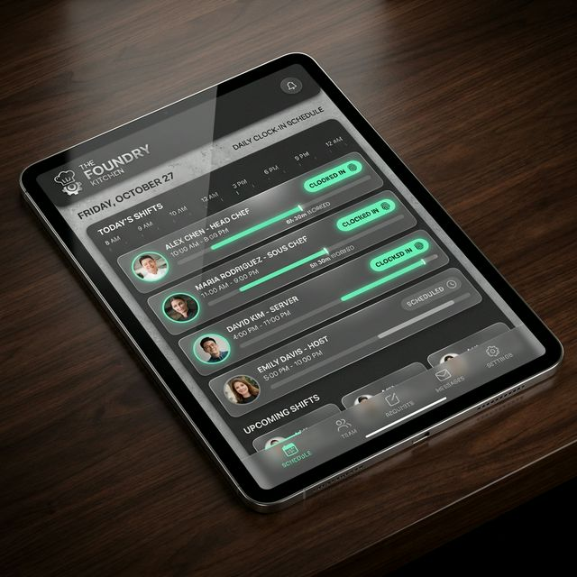
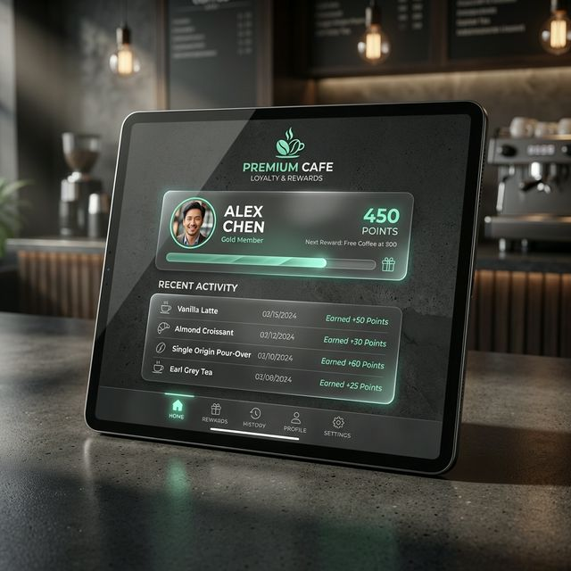
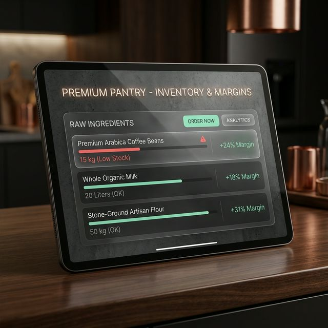
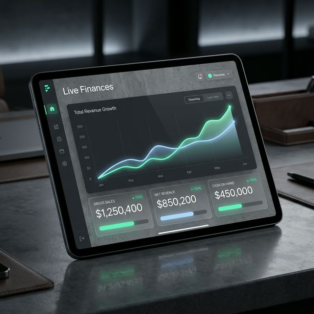

El sistema operativo todo-en-uno con inteligencia integrada que toma decisiones por ti.
Diseñado meticulosamente para la naturaleza exacta de tu operación.
Maneja picos de clientes con un POS que vuela. Opciones de leche, modificadores complejos y gestión de tuestes al gramo directamente en la caja.
El inventario vivo dicta qué se puede vender. Enrrutamiento de comandas a estaciones y control total de mermas.
Códigos de barras, escáneres inalámabricos y control exhaustivo de variantes (tallas, colores). Siempre sabrás qué vender.
POS ultra rápido, manejo de caja multimoneda y torre de control en vivo para el salón.
Gestiona staff, módulo de entrada/salida (clock in/out), nóminas y planificación de turnos.
Sistema de fidelidad automatizado y gestión integral del ciclo de vida de tus clientes.
Ideal para restaurantes: compras que actualizan proveedores, márgenes automáticos en vivo y generación de tareas de producción acorde al inventario para que nunca falte nada.
Gestión completa de finanzas: control exacto del flujo de caja (cash flow), cuentas por pagar y cuentas por cobrar.





Pídele a Wave AI cualquier cosa sobre tu negocio para obtener insights inmediatos.
Saber más →Olvídate de hacer malabares con 6 aplicaciones diferentes. Te damos el cuerpo físico completo requerido para manejar tus operaciones diarias a la perfección.
Súper rápido, cero entrenamiento requerido. Toma órdenes y enrrútalas directo a la cocina sin interrupciones.
Rastreamos cada gramo y gota. Conoce tu margen exacto en cada ticket, actualizado constantemente en tiempo real.
Quién está trabajando, quién vende más, y exactamente cuánto efectivo hay en la caja registradora contra el banco.
Cero contratos forzosos. Cero fricción. Solo un negocio más inteligente desde el primer día.